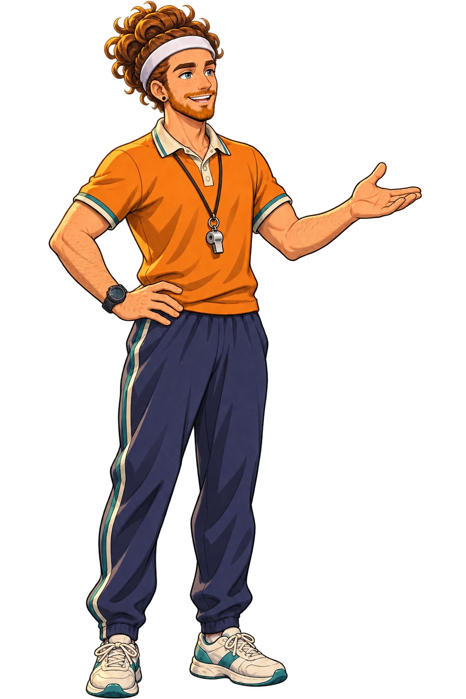

Habla con el profe y explora el gimnasio.
Prepara el material y deja el gimnasio listo para la siguiente sesión.
Selecciona un objeto y después su destino. Puedes usar Tab y Enter; no necesitas arrastrar.
Individual, en pareja o con proyector. En pareja: una persona lee la consigna y la otra prepara el material; intercambiad los roles.
Reconocer riesgos en pantalla aporta evidencias de comprensión. La seguridad y convivencia reales se observan después en clase. No es un examen certificado.
El profe utiliza el avatar del director Robles de La Lupa, adaptado a EF. No se solicita información de alumnos.